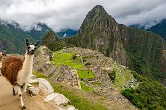
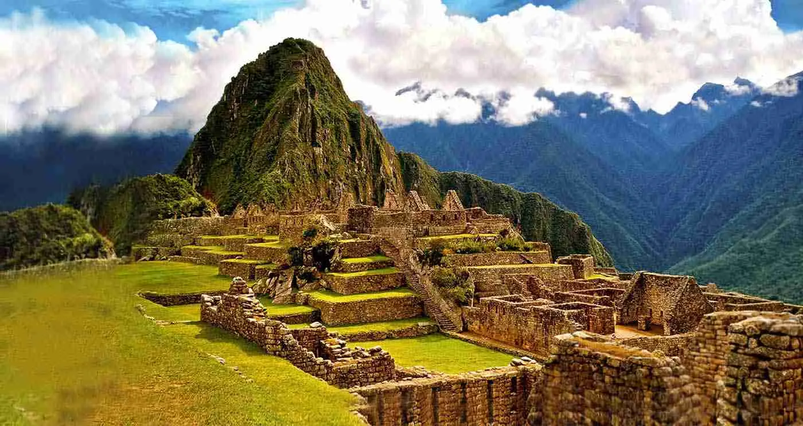
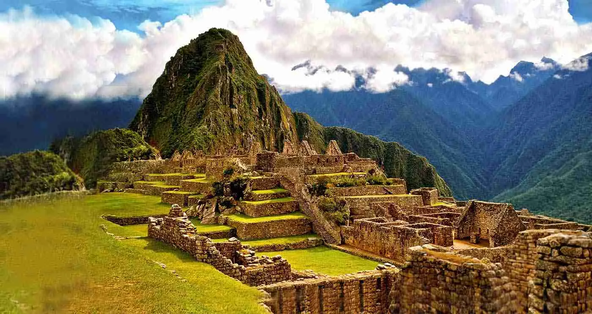

História do Monumento
"Machu Picchu é uma antiga cidade construída pelos incas no século XV no alto da Cordilheira dos Andes, na província peruana de Urubamba. O conjunto ocupa atualmente uma área de 32.592 hectares, o que é equivalente a 325,92 km², distribuindo-se sobre dois picos montanhosos: Machu Picchu (que significa Antiga Montanha ou Velho Pico) e Huayna Picchu (Nova Montanha ou Novo Pico). As ruínas da cidade são compostas por cerca de 200 estruturas rochosas, a maioria construída em granito, que resistiram ao tempo (cronológico) e às intempéries climáticas por séculos. Essas estruturas (templos, palácios, depósitos) eram utilizadas para finalidades diversas, dentre as quais estão: cerimônias e ritos religiosos, desenvolvimento de prática agrícola e como centros de observação astronômica. Conectando esses locais estão pontes, terraços e trilhas também construídas com rochas, o que faz de Machu Picchu uma das mais impressionantes estruturas da América pré-colombiana. A cidade está situada em uma região montanhosa de clima ameno, com temperaturas que variam entre 20 °C e 1 °C durante o ano e alto volume de chuvas, superando os 2000 mm anuais. Tanto a sua posição quanto disposição, entretanto, proporcionam a existência de uma série de microclimas locais. O sítio de Machu Picchu dispõe ainda de uma ampla biodiversidade, que contém espécies de animais e de plantas características da região dos Andes e da Amazônia."
Importância Cultural
"maior parte da cidade de Machu Picchu se encontra preservada, isto é, sofreu poucas alterações no decorrer dos mais de 500 anos de sua existência. A fortaleza representa uma importante fase da história do continente sul-americano, que é o período anterior à colonização europeia. Machu Picchu revela também os avanços técnicos na engenharia e na arquitetura de uma das principais civilizações da América pré-colombiana, o que torna a cidade um importante sítio histórico e arqueológico. Segundo a Unesco, entender a forma como se dava o funcionamento da sociedade inca e a divisão territorial das suas tarefas são ainda algumas das informações que podem ser depreendidas da estrutura de Machu Picchu e que reforçam a importância desse local."
Arquitetura
A arquitetura do monumento é impressionante. Com detalhes únicos, é uma obra-prima da engenharia e design...
Galeria de Imagens

 

Saiba mais
Clique aqui para saber mais sobre a história do monumento.
Clique aqui para saber como o monumento foi escolhido para ser uma das 7 maravilhas do mundo.